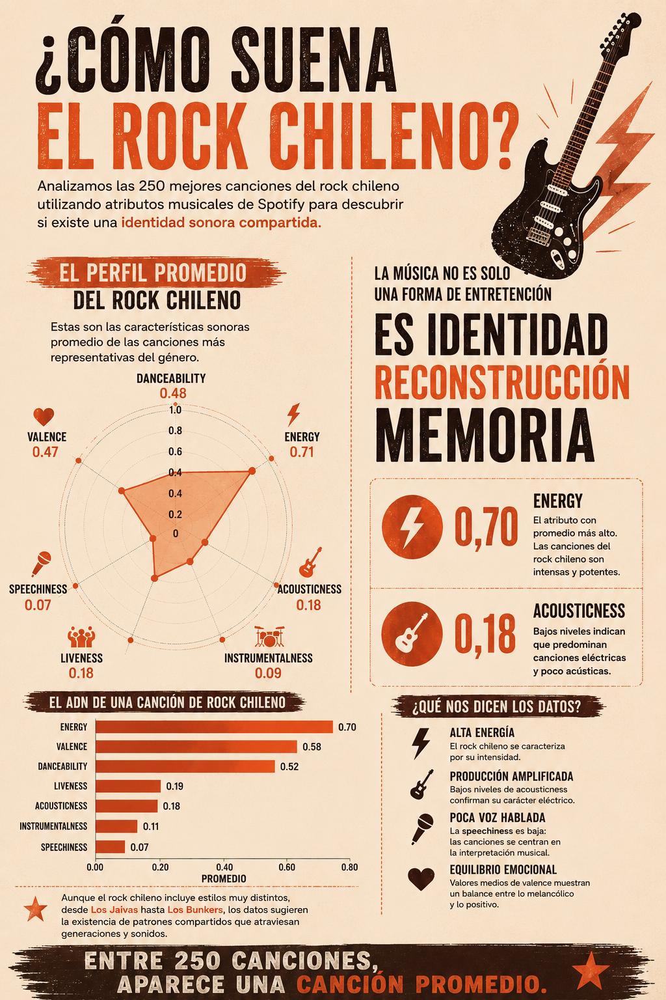
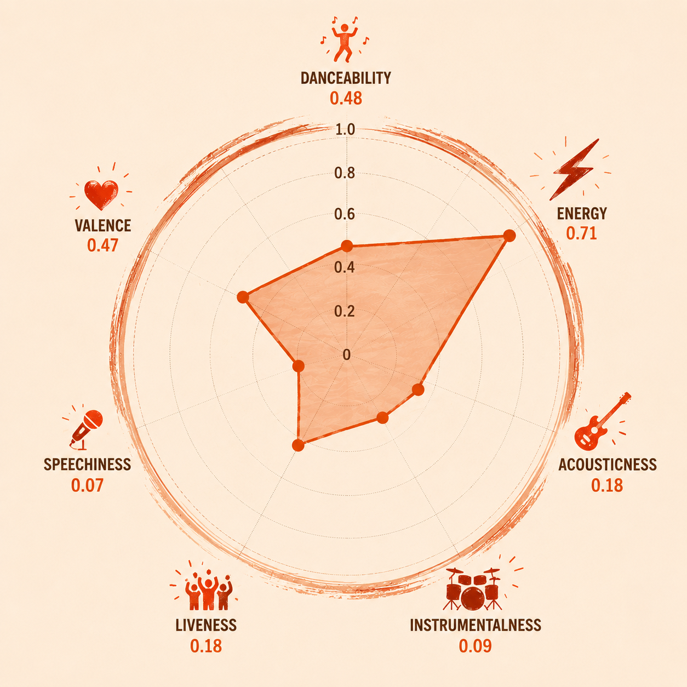
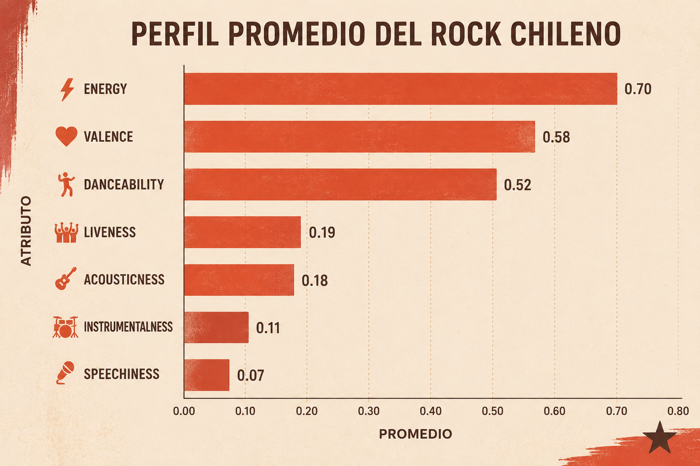

Analizamos las 250 mejores canciones del rock chileno para identificar si existe una identidad sonora compartida entre artistas, generaciones y estilos musicales.
El rock chileno es un género diverso. Desde Los Jaivas y Los Prisioneros hasta Los Bunkers, las diferencias musicales parecen evidentes. Sin embargo, al analizar sus características sonoras mediante datos obtenidos desde Spotify, comienzan a aparecer patrones comunes.
Para esta investigación se estudiaron las 250 mejores canciones del rock chileno utilizando atributos musicales desarrollados por Spotify que permiten describir técnicamente cómo suena una canción.


El gráfico radar permite observar simultáneamente los principales atributos sonoros de las canciones analizadas. Destacan especialmente los altos niveles de energía y los bajos niveles de acousticness y speechiness.

La variable con el promedio más alto es Energy, cercana a 0,7 en una escala de 0 a 1. Esto indica que gran parte de las canciones más representativas del rock chileno poseen altos niveles de intensidad sonora.
En contraste, Acousticness presenta valores bajos, lo que sugiere que predominan canciones eléctricas y amplificadas por sobre composiciones acústicas.
Nuestra pregunta inicial era si podía identificarse una identidad sonora dentro del rock chileno. Los datos no permiten entregar una respuesta absoluta, pero sí muestran una tendencia clara: las canciones más representativas del género comparten un perfil común.
En promedio, las canciones analizadas son energéticas, eléctricas, poco acústicas y emocionalmente equilibradas. Más allá de las diferencias entre bandas y épocas, los datos sugieren la existencia de una firma sonora compartida dentro del rock chileno.